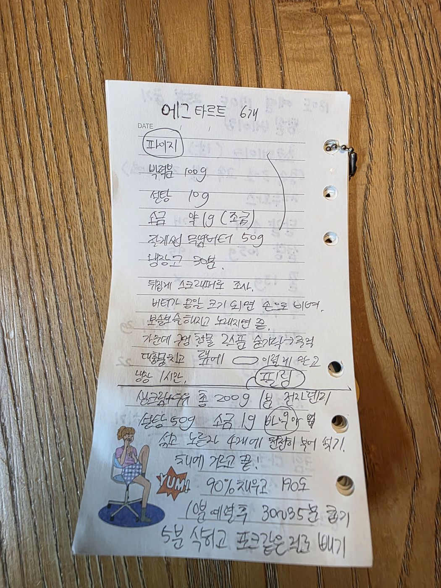

← 전체 레시피
파이·타르트
🥧 에그타르트
손으로 적은 노트를 그대로 옮긴 레시피입니다.
분량
6개
굽기
190℃ · 예열 후 30~35분
📷 원본 노트 사진 보기
재료
파이지
박력분 100g
설탕 10g
소금 약 1g (조금)
차가운 무염버터 50g
필링
생크림 + 우유 총 200g (1:1 정도)
설탕 50g
소금 1g
바닐라 약간
노른자 4개
만드는 법
가루 재료와 차가운 버터를 냉장고에 30분 넣어둔다.
뒤집개(스크래퍼)로 자르듯 섞는다.
버터가 콩알 크기가 되면 손으로 비벼준다.
보슬보슬해지고 노래지면 볼 가운데에 구멍을 내고 찬물 2스푼을 넣어 숟가락으로 긁어 모은다.
대충 뭉쳐 랩에 납작하게 싸서 냉장 1시간 휴지.
필링: 생크림·우유를 데우고 설탕·소금·바닐라를 섞은 뒤, 노른자 4개에 천천히 부어가며 섞는다.
체에 한 번 거른다.
타르트지에 필링을 90% 채우고 190℃ 예열 후 30~35분 굽는다.
5분 식히고 포크 같은 걸로 빼낸다.

원본 노트 사진 — 탭하면 크게 볼 수 있어요